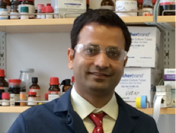

Dr. Ramakrishna Edupuganti
Biography: During my graduate studies at Temple University, Philadelphia, I worked with prof. Franklin A. Davis and prof. Grant R. Krow and involved in "Asymmetric Synthesis of Homotropinone and Tropane Alkaloids Using Enantiopure Sulfinimines & the Synthesis and Applications of Methanoprolines".

CONTACT: erkchem@gmail.com
DEGREES: Ph.D., Chemistry, Temple University, Philadelphia, PA, 2011. M.Sc., Chemistry, Jawaharlal Nehru Technological University, AP, India, 2002. B.Sc., Andhra University, AP, India, 1998
ANSLYN GROUP PUBLICATIONS:
Edupuganti, R.; Wang, Q.; Tavares, C. D. J.; Chitjian, C. A.; Bachman, J. L.; Ren, P.; Anslyn, E. V.; Dalby, K. N. "Synthesis and Biological Evaluation of Pyrido[2,3-d]pyrimidine-2,4-dione Derivatives as eEF-2K Inhibitors" Bioorg. Med. Chem., 2014, 22, 4910-4916.
Barman S.; You L.; Chen R.; Codrea V.; Kago G.; Edupuganti, R.; Robertus J.; Krug R. M.; Anslyn E. V. "Exploring naphthyl-carbohydrazides as inhibitors of influenza A viruses" Eur. J. Med. Chem.,2014, 71, 81-90.
Jo, H. H.; Edupuganti, R.; You L.; Dalby, K. N.; Anslyn, E. V. "Mechanistic Studies on Dynamic Multi Component Covalent Assemblies of Metal-Mediated Hemiaminal Ethers" Chemical Science.,2015, 6, 158-164.
Warthaka, M.; Adelmann, C. H.; Kaoud, T. S.; Edupuganti, R.; Yan, C.; Johnson Jr, W. H.; Ferguson, S.; Anslyn, E. V.; Ren, P.; Tsai, K. Y.; Dalby, K. N. "Quantification of a Pharmacodynamic ERK Endpoint in Melanoma Cell Lysates: Towards Personalized Precision Medicine" ACS Med. Chem. Lett., 2015,6, 47-52.
OTHER PUBLICATIONS:
Gorres, K. L.; Edupuganti, R.; Krow, G. R.; Raines, R. T. "Conformational Preferences of Substrates for Human Prolyl 4-Hydroxylase" Biochemistry,2008, 47, 9447.
Krow, G. R.; Edupuganti, R.; Gandla, D.; Choudhary, A.; Lin, G.; Sonnet, P. E.; DeBrosse, C.; Ross III, C. W.; Cannon, K. C.; Raines, R. T. "5(6)-anti-Substituted-2-azabicyclo[2.1.1]hexanes: A Nucleophilic Displacement Route" J. Org. Chem.2009, 74, 8232.
Davis, F. A.; Edupuganti, R."Asymmetric Synthesis of Substituted Homotropinones from N-Sulfinyl-Amino Ketone Ketals. (-)-Euphococcinine and (-)-Adaline" Org. Lett. 2010, 12, 848.
Davis, F. A.; Theddu, N. Edupuganti, R. "Asymmetric Total Synthesis of (S)-(+)-Cocaine and the First Synthesis of Cocaine C-1 Analogs from N-Sulfinyl-Amino Ester Ketals" Org. Lett.2010, 12, 4118.
Krow, G. R.; Edupuganti, R.; Gandla, D.; Yu, F.; Sender, M.; Sonnet, P. E.; Zdilla, M. J.; DeBrosse, C.;Cannon, K. C.; Ross III, C. W.; Choudhary, A.; Shoulders, M. D.; Raines, R. T. "Synthesis of Conformationally Constrained 5-Fluoro- and 5-Hydroxymethanopyrrolidines. Ring Puckered Mimics of Gauche and anti-3-Fluoro- and 3-Hydroxypyrrolidines" J. Org. Chem. 2011, 76, 3626.
Edupuganti, R.; Davis, F. A. "Synthesis and Applications of Masked Oxo-Sulfinamides in the Asymmetric Synthesis" Org. Biomol. Chem. 2012, 10, 5021-5031. (Perspective)
Krow, G. R.; Shoulders, M. D.;Edupuganti, R.; Gandla, D.; Yu, F.; Sonnet, P. E.; Cannon, K. C.; Choudhary, A.; DeBrosse, C.; Ross III, C. W.; Carroll, P.; Raines, R. T. "Synthesis of 5-Fluoro- and 5-Hydroxymethanoprolines via Lithiation of N-BOC Methanopyrrolidines. Constrained C-exo and C-endo Flp and Hyp Conformer Mimics" J. Org. Chem. 2012, 77, xxxx. in press, ASAP
8. Devkota, A. K.; Edupuganti, R.; Yan, C.; Shi, Y.; Jose, J.; Wang, Q.; Kaoud, T. S.; Cho, E. J.; Ren, P.; Dalby, K. N. "Reversible Covalent Inhibition of eEF-2K by Carbonitriles" ChemBioChem. 2014,15, 2435-2442..
9. Devkota, A. K.; Warthaka, M.;Edupuganti, R.; Tavares, C. D. J.; Johnson, W. H.; Ozpolat, B.; Cho, E. J.; Dalby, K. N. High Throughput Screens for eEF-2 Kinase†J. Biomol. Screen 2014, 19, 445-452.